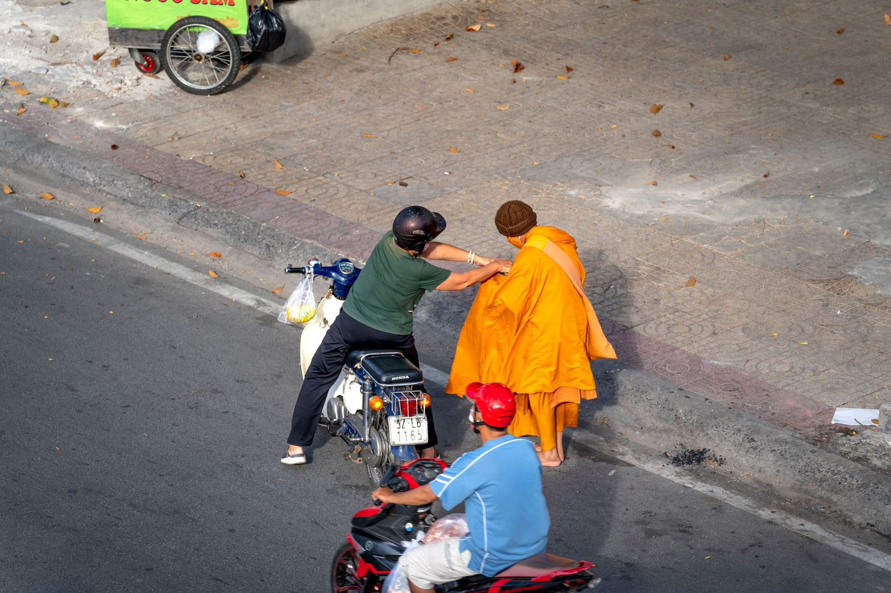
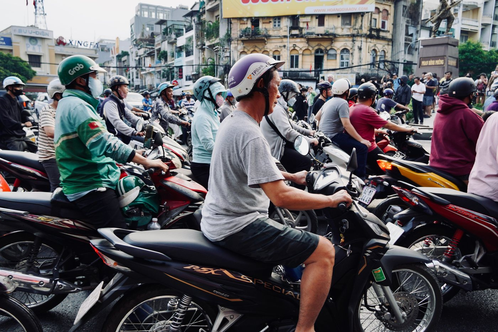
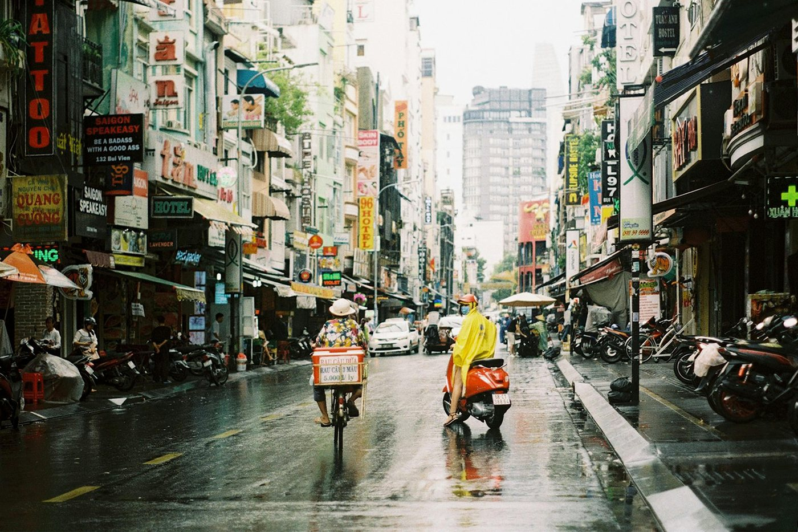

Bike accident in Vietnam: what to do step by step

A minor collision in dense traffic is the most common trouble on a bike. Most often it's a clipped mirror, scratched plastic or a low-speed fall. Panic and trying to “just ride off” turn an everyday situation into a serious offence, so it's worth knowing what to do in advance rather than remembering it on the asphalt.
1. Stop. This isn't advice, it's the law
Under Vietnamese rules, anyone involved in an accident must stop immediately, keep the scene as it is, help any injured person, stay at the scene or report to the authorities right away. For a motorcycle or moped rider, breaking this rule carries a fine of 8,000,000 – 10,000,000 ₫ under Decree No. 168/2024/NĐ-CP (in force since 1 January 2025), plus points deducted from the driving licence.
Separately about 50cc: the points system is tied to a licence, and if you don't have one there's nothing to deduct points from — but the fine itself is paid in full. So “rode off and forgot it” can, in the worst case, cost more than the whole bike. If someone was injured, it's no longer an administrative fine but far more serious liability.
2. Make the scene safe
The first seconds are not for talking but for making sure you aren't hit a second time:
- switch on the hazard lights or, if there are none, leave the lights on;
- move the bike out of the lane if it's lying in traffic and there are injured people or a risk of being hit;
- if nobody is hurt and traffic allows, it's better not to move anything, but stand nearby marking the spot;
- don't take your helmet off straight away if you hit your head.
3. Phone numbers
Three numbers worth keeping in your notes, because under stress you won't remember them:
- 113 — police;
- 115 — ambulance;
- 114 — fire and rescue.
The call will be in Vietnamese. If you don't speak it, ask any passer-by for help — someone almost always responds — or hand the phone to a local straight away. It helps to have your accommodation address written in Vietnamese in advance: it speeds up any conversation.

4. What to record on your phone
Photos are your only argument an hour later, when the vehicles have gone and the stories differ. Take them before anything is moved:
- a wide shot from two directions showing the lanes and the traffic light;
- the position of both vehicles;
- close-ups of the damage to your bike and the other party's;
- the plates of both vehicles;
- skid marks, spilled oil, debris on the road if it played a role;
- the other party's documents — Blue Card and licence, if they let you photograph them.
Also get the phone numbers of one or two witnesses. A video walking around the scene is better than ten separate shots.
5. If nobody is injured
Minor contacts in Vietnam are usually settled on the spot: both sides assess the damage and agree on compensation without calling the police. That's legal practice if both agree and nobody is hurt. Some pointers:
- don't admit fault right away “just to be let go” — first see what's really damaged;
- discuss amounts based on actual repair costs, not by eye: it's sensible to ride to a workshop together and ask the price;
- if you can't agree, call the police instead of raising your voice;
- hand over money after taking photos, preferably in front of a witness.
6. If someone is injured
Helping is an obligation, not a choice. Call 115, don't move the person unless necessary (especially with a head, neck or back injury) and stay until the services arrive. Leaving a scene where someone was hurt is the worst possible decision, both legally and in its consequences.

7. Afterwards: the bike, your health, insurance
Even if everything seems fine, check the handlebars are straight, the fork, the brake travel and whether the wheel is buckled — after a fall these are the most common hidden damages. The inspection order is in what to do if your bike falls.
About health: go to a clinic rather than “sleeping it off” — grazes get infected quickly in a humid climate. And find out in advance what your insurance covers: the bike's compulsory insurance and your travel medical insurance are different things, and the second often excludes riding without the right licence category. More — on insurance for a 50cc bike.
What reduces the risk in advance
Almost all minor accidents come down to three causes: speed in traffic, blind spots at turns and a bike that doesn't brake as it should. It's worth reading how to brake properly, how to ride through junctions and doing a two-minute check before riding.
Short conclusion
Stop, make the scene safe, call for help if anyone is injured, record everything on your phone and negotiate calmly. Leaving the scene costs more than any repair: under Decree No. 168/2024 it's 8–10 million ₫ for a bike. A sound bike and clear papers reduce the number of such situations — how buying from us works.